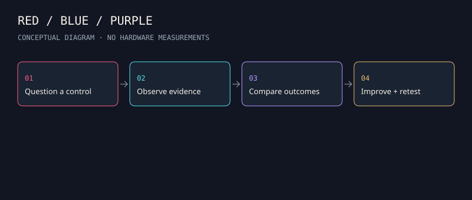
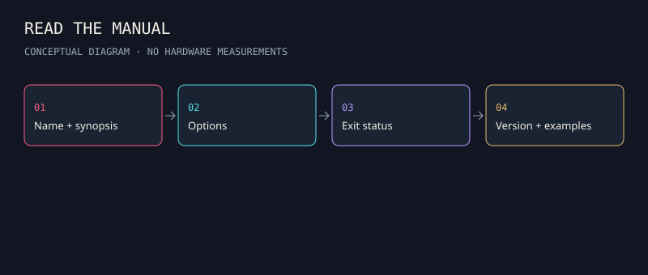

01 / Everyday IT
Interfaces, routes, sockets, DNS, TLS and HTTP. Understand what each layer can tell you.
Read the guide →Before the tools, learn the system.
Interfaces, routes, sockets, DNS, TLS and HTTP. Understand what each layer can tell you.
Read the guide →Red tests assumptions, blue observes and responds, purple joins the evidence and improves controls.
Read the guide →Kali packages tools. Learn versions, package documentation and a clean local environment.
Read the guide →A harmless HTTP service, synthetic event triage, digest verification and manual-reading practice.
Read the guide →What claim about a control deserves an agreed test? What evidence would show a gap?
Which events are recorded, which are missing, and can the system recover reliably?
Join the question to the observation. Fix the gap and repeat the same comparison.

From the repository root, start the supplied harmless web fixture. Open a second terminal to inspect its response.
python -m http.server 8765 --bind 127.0.0.1 --directory foundations/fixtures/web
curl --noproxy '*' --include http://127.0.0.1:8765/health.jsonRead the output: HTTP status, Content-Type and JSON body describe different parts of the result. Stop the server with Ctrl+C. Use the full lab to compare HTTP errors and transport errors.
